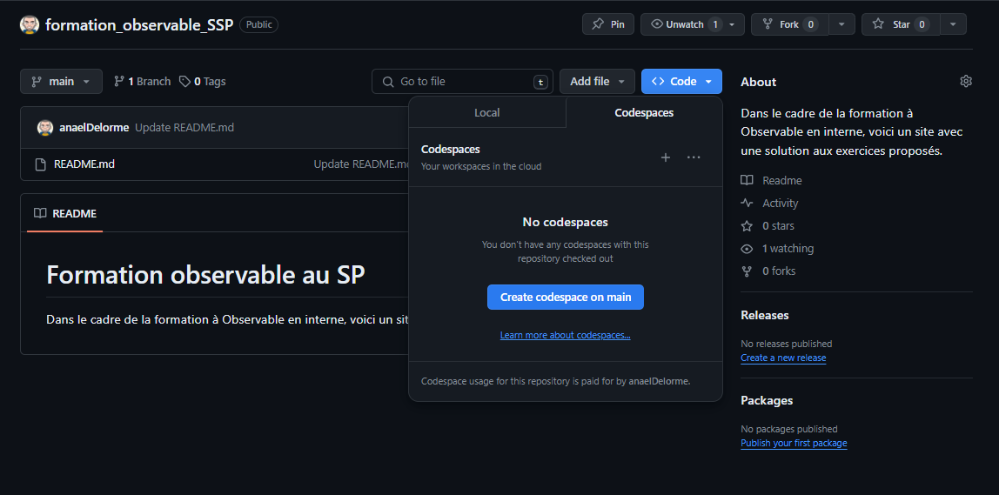
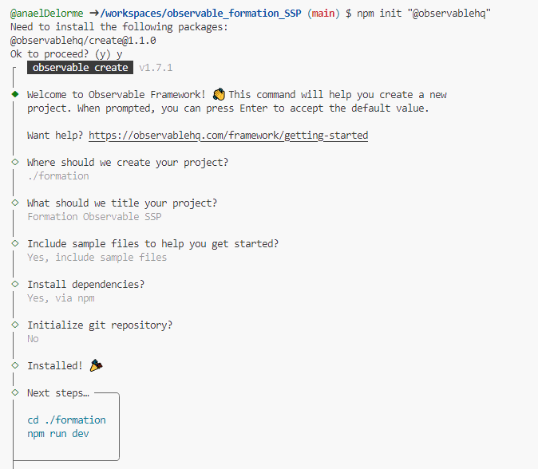

npm init "@observablehq"Création d’un premier site
Création de l’environnement de travail
Pour travailler en R, il est courant de travailler dans Rstudio. Pour le développement web, il est fortement recommandé de travailler avec VS Code. C’est un environnement de travail qui a des fonctionnalités équivalentes à RStudio mais qui est multi-langage. En ajoutant des extensions, on peut faire du R, du python, du javascript, du markdown, du CSS, etc…
Il est possible (et recommandé) d’installer un VSCode en local sur son poste de travail. Pour la formation, et éviter des dificultés liées au proxy et aux droits d’admin, nous vous proposons d’utiliser un service proposé par Github qui s’appelle Codespaces. Codespaces vous offre un environnement de développement virtualisé, ce qui signifie qu’il n’est pas sur votre poste de travail mais sur un serveur de Github.
Codespaces, en 2 mots
GitHub Codespaces est un environnement de développement cloud proposé par GitHub. Il vous permet de créer rapidement des espaces de code pré-configurés, appelés codespaces, directement à partir de n’importe quel dépôt GitHub.
Avec un compte gratuit, vous pouvez bénéficier des fonctionnalités suivantes de Codespaces :
- Créer des codespaces : Vous pouvez créer un codespace pour n’importe quel dépôt public ou privé appartenant à votre compte GitHub. Les dépôts privés comptent dans votre quota de stockage privé.
- Environnement Linux préconfigurés : Vos codespaces disposent d’un environnement Linux complet pré-configuré avec un grand nombre d’outils de développement, runtimes, éditeurs de code (VS Code), etc.
- Configuration personnalisée : Vous pouvez personnaliser la configuration de vos codespaces en définissant des extensions VS Code, dépendances et tâches de construction.
- Accès sécurisé : Vos codespaces sont accessibles via un tunnel HTTPS sécurisé et vous pouvez collaborer avec d’autres utilisateurs au sein d’un codespace.
Warning
Attention : avec un compte gratuit, on ne peut utiliser Codespaces que 120 heures par mois et avec un stockage de 15 GB max par mois. Au delà il faudra installer VSCode sur votre poste de travail.
Créer un espace codespaces pour votre repository
- aller sur Github à la page de votre repository
- Ouvrir le menu Code, aller dans l’onglet Codespaces et choisir Create codespace on main

- vous arrivez directement dans un VSCode avec :
A gauche le menu
Puis l’explorateur qui liste les fichiers de votre repository
En page principale est ouvert votre fichier Readme
En bas vous avez le terminal
Créer le site Observable dans votre repository
NPM et Node.js en quelques mots
Pour créer un site Observable et le compiler, on passera des commandes très simples avec NPM. Voici une présentation rapide :
Node.js Node.js est un environnement d’exécution JavaScript côté serveur. Il permet d’exécuter du code JavaScript en dehors d’un navigateur web, directement sur votre ordinateur ou un serveur. Node.js est particulièrement utile pour créer des applications web, des APIs, des outils en ligne de commande ou encore des scripts automatisés.
NPM (Node Package Manager) NPM est le gestionnaire de paquets officiel de Node.js. Il vous permet d’installer facilement des bibliothèques open-source écrites par la communauté Node.js. Ces bibliothèques, appelées “packages”, ajoutent des fonctionnalités supplémentaires à votre application. NPM vous évite d’avoir à tout réécrire de zéro.
Commandes NPM courantes Voici quelques commandes npm que vous utiliserez fréquemment :
npm install: Cette commande installe toutes les dépendances (packages externes) requises par votre projet, listées dans le fichier package.json.npm install <package-name>: Cette commande installe une librairie spécifique.
npm update: Cette commande met à jour toutes les librairies listées dans le fichier package.json.npm update <package-name>: Cette commande met à jour une librairie spécifique.
npm uninstall <package-name>: Désinstalle un package de votre projet.
npm run script: Exécute un des scripts définis dans package.json, par exemple “npm run build”.
npm init: Crée un nouveau fichier package.json pour commencer un nouveau projet Node.
Création du site Observable avec les exemples
Dans le terminal, lancer la commande suivante :
Puis répondre aux questions :
Warning
Attention à ne pas initialiser de repo GIT car c’est déjà au niveau du projet !

Une vidéo en anglais décrit bien le déroulé de cette étape :
Lancement du site
Comme proposé dans le terminal, il faut aller dans le répertoire créé et lancer la commande qui permet de démarrer le site en développement.
cd ./formation
npm run dev Un onglet s’ouvre avec votre site Observable en développement, avec les exemples de dashboard et de report.

Vérification de la mise à jour automatique
- Aller dans src et ouvrez index.md.
- A la ligne 48, remplacer Hello par Bonjour et enregistrer (CTRL + S).
- Vérifier que votre site a bien été mis à jour.
Tip
Si vous avez fermé l’onglet qui contient votre site de dev, vous pouvez le réouvrir en cherchant dans le terminal http://127.0.0.1:3000/ et en faisant un CTRL + clic dessus.
Warning
Actuellement votre site n’est pas disponible sur internet. Ce n’est qu’une prévisualisation. Le site est accessible uniquement temporairement sur un serveur temporaire de votre codespaces (en localhost ou 127.0.0.1 de votre codespaces).